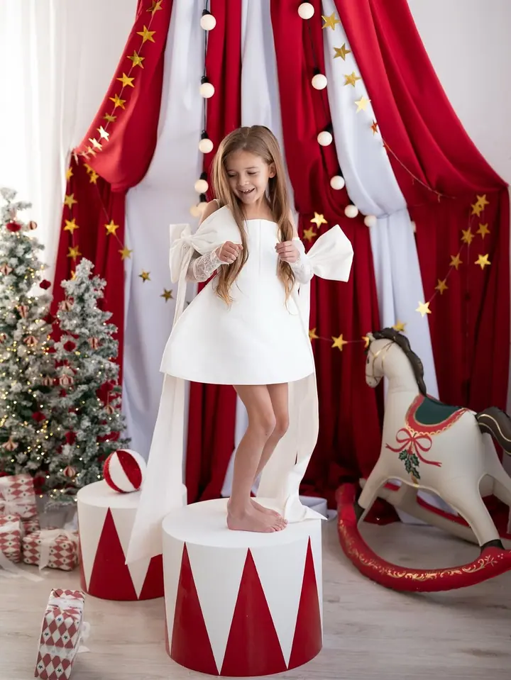
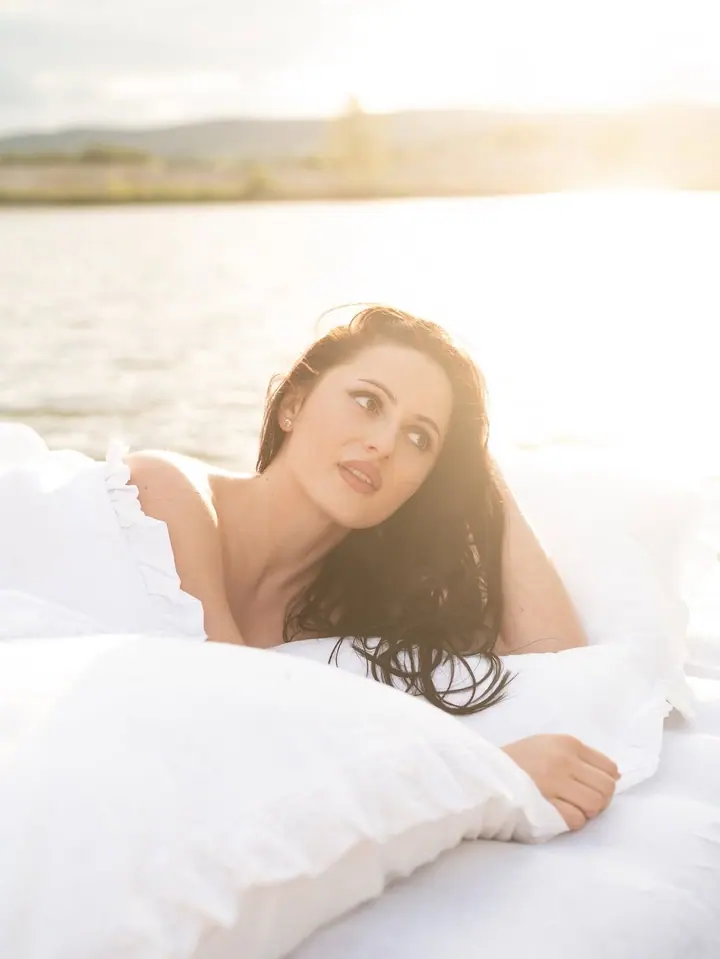

Rodinné a těhotenské focení
Rodinné, těhotenské i párové focení v ateliéru v Klatovech, v Domečku v Kydlinách nebo venku. Vyhradím si na vás obvykle dvě hodiny, aby se děti stihly v klidu rozkoukat.

Jmenuji se Nikol Vacovská a jsem rodinná fotografka z Klatov. Jsem máma dvou dětí, které mě k focení přivedly. Dnes fotím rodiny, maminky v očekávání, miminka i svatby v…
Rezervovat termínJsem máma dvou dětí, svatouška Marka a dračice Zoe. Právě ony mě přivedly k focení a každý den mi připomínají, jak rychle čas utíká. Profesionálně fotím už čtvrtým rokem a nejvíc mě těší opravdové emoce a chvíle, které se už nevrátí.

V Klatovech mám prostorný ateliér a k němu šatnu plnou stovek šatů pro malé i velké princezny. Kousek od města, v Kydlinách, na vás čeká ještě Domeček. Specializuji se na rodinné, těhotenské a newborn focení, ráda ale nafotím i svatbu, narozeniny nebo třídní kolektiv. Hodně oblíbená jsou u mě tematická focení od Vánoc po Valentýn.
Na focení u mě není kam spěchat. Obvykle si na vás vyhradím dvě hodiny, aby se všichni cítili dobře a děti měly prostor se rozkoukat. Chci, abyste si odnesli nejen fotky, ale i hezkou vzpomínku na společně strávený čas plný smíchu.
Co fotím
Rodinné, těhotenské i párové focení v ateliéru v Klatovech, v Domečku v Kydlinách nebo venku. Vyhradím si na vás obvykle dvě hodiny, aby se děti stihly v klidu rozkoukat.
Tematická focení od Vánoc po Valentýn a narozeninové focení s balónky, které si pak odvezete na oslavu. U vánočního focení je v ceně půjčení šatů a 5 scén.
Od samotného obřadu až po celý den s přípravami, hostinou, prvním tancem a krájením dortu. K balíčku Obřad patří i zásnubní fotky během předsvatební schůzky.
Jemné focení miminek v teple a klidu ateliéru. Dostanete 10 fotografií a 2 detaily v digitální podobě.
Postup
Pošlete mi pár slov o tom, jaké focení si představujete. Společně najdeme termín, který vám vyhovuje.
Fotit můžeme v ateliéru v Klatovech, v Domečku v Kydlinách nebo venku. Oblečení si můžete půjčit z mého šatníku, nebo si vezměte vlastní, nejlépe světlé a sladěné jako rodina.
Na focení si vyhradím obvykle dvě hodiny. Děti mají čas se rozkoukat a vy si to můžete v klidu užít.
Náhledy vám pošlu do 3 dnů a hotové fotky do 14 dnů. Dostanete je elektronicky, přes odkaz ke stažení.
Otázky
Šaty a oblečení si můžete půjčit z mého šatníku. Pokud chcete vlastní, nejlépe fungují světlé barvy, sladěné pro celou rodinu.
Náhledy posílám do 3 dnů, finální upravené fotky do 14 dnů. Dostanete je elektronicky přes odkaz ke stažení.
Ano, každá fotografie navíc stojí 350 Kč.
Neupravené fotografie neposkytuji. Dostanete jen fotky, které jsem pečlivě vybrala a upravila.